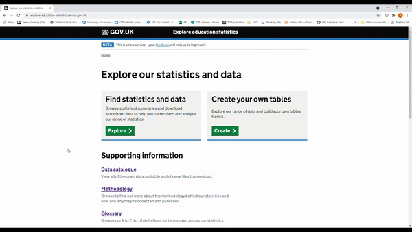

Public dashboards
Guidance for publishing public statistics dashboards
When to use a dashboard
The primary route for publishing official statistics is using the explore education statistics service (EES). In addition to publishing on EES, there may be times where you want to compliment official statistics with a dashboard. This may be to do a deeper piece of analysis for a specific user group, or to make use of functionality that isn’t available within the platform.
It is important that all dashboards should have a clear use case and reasoning for why they are required. If you are considering developing and publishing a dashboard, please get in touch with the explore education statistics platforms team who can advise and assist with the process, and make use of the R Shiny statistics dashboards Microsoft Teams channel to ask questions and share what you’re working on with other teams.
This guidance is aimed primarily at dashboards published to supplement Official Statistics to the wider public. See the how to publish an R shiny dashboard section below for more information on the guidance for internal only R Shiny dashboards, or public facing R Shiny dashboards via shinyapps.io.
This page includes specific guidance for R Shiny dashboards, for teams using PowerBI, the department has a set of PowerBI dashboard standards that can be found on the DfE’s analytical services GitHub area.
There is also a dashboards version of the content design checklist. This checklist runs through a number of things to think about when developing dashboards to compliment official statistics and is worth using to design and also review any dashboards you own - Dashboards checklist (.xlsx). We also have a dashboard procedure checklist in this guidance page that outlines the steps required to set up an R Shiny dashboard.
Standards to follow
We expect all dashboards to follow a minimum set of standards to ensure coherence between our products and a minimum standard of quality for our end users.
These standards are constantly evolving, and all feedback and contributions are welcome, contact the explore education statistics platforms team.
All dashboards should have a clear use case and reasoning for why they are required. They also need to meet the latest accessibility regulations for public sector services.
Dashboards, along with the Official Statistics that they supplement, are a digital service that we provide, and we should ensure we follow the Service Standard. The standard covers a number of aspects that all producers should be considering when developing a dashboard, and strongly influence the guidance on this page.
All data must be published on EES as open CSV files so that it is accessible in one place and we are not publishing anything new via dashboards.
When published, dashboards can be directed to from existing EES releases using the related links at the top right of a release page, or by being included as a url anywhere in the release content.
The following sections cover the considerations in more detail, though when developing a dashboard you need to commit to thinking about:
- User needs
- Software - long term sustainability, knowledge and resource
- Accessibility guidance
- Consistent styling
- User engagement and analytics
Governance
All teams developing dashboards to accompany Official Statistics should contact the explore education statistics platforms team for advice on the level of approval required as there may be times when HoP approval is needed in addition to team / unit leader approval. Approvals should be sent to the Statistics Development Team when asking for a new dashboard to be hosted on shinyapps.io.
The standards for dashboards, and department strategy are maintained by the Central Statistics Standards Unit and governed by the Statistics Leadership Group, which is made up of all senior statisticians owning Official Statistics publications in the department.
Regular reflection on how teams are doing and finding ways to improve is an important part of good governance. We recommend that Senior Statisticians responsible for dashboards ensure that they are regularly reviewed, covering:
- testing and quality assurance
- accessibility
- performance against user needs
- overall coherence with central standards and strategy found on this page
User needs
When designing a government service, always start by learning about the people who will use it. If you do not understand who they are or what they need from your service, you cannot build the right thing.
Understanding as much of the context as possible gives you the best chance of meeting users’ needs in a simple and cost effective way.
The real problem might not be the one you originally thought needed solving. Testing your assumptions early and often reduces the risk of building the wrong thing.
Services designed around users and their needs:
- are more likely to be used
- help more people get the right outcome for them - and so achieve their policy intent
- cost less to operate by reducing time and money spent on resolving problems
See the service manual for more information on learning about your users and their needs.
Software choices
When you make a decision about technology, you’re making a significant investment. The choices you make will have a huge impact on your ability to create, iterate and operate the service in a sustainable way. We should be choosing tools and technology that let us create a high quality service in a cost effective way and minimise the cost of changing direction in future.
For public facing dashboards we recommended using R Shiny.
We feel that it best meets the service standards, it aligns with the departments RAP strategy for the use of R in in Official Statistics, and the general direction of the government analytical community.
R Shiny is incredibly customisable, and ideal for providing everything in one place - interactivity, user customised printable PDFs (replacing old mail merge solutions), and ease of use on a phone!
R Shiny takes advantage of transferable knowledge and shared resources that already exist to minimise the costs and maximise the shared benefits.
While we recommend R Shiny, teams may use other tools if it can be justified against the Service Standard 11. Choose the right tools and technology.
The most common dashboard options available to us are:
- R Shiny
- Python Dash (or other Python-based alternatives)
- PowerBI
Some considerations to think about when choosing the tooling / software for a dashboard:
- will it be open source? (Service standards 12 and 13)
- what skills do your team already have, or are already developing?
- can you reuse anything that someone else has already done?
- do you have flexibility in formatting and styling?
- will you be able to maintain it long term?
- does it give the flexibility required to meet accessibility requirements?
- what costs will it involve? (Consider learning and development time and courses as well as hosting)
- will it allow you to develop automated testing and CI to QA our dashboards?
- does it align with the AF expectation to move towards R and Python for analysis?
The guidance on this site has a focus on R Shiny. However, if you are using PowerBI you should also make use of the department’s PowerBI Dashboard standards, and aim to make use of reusable configurations where possible to ensure that duplication of effort across the department is minimised.
Assessing engagement
Work out what success looks like for your service and identify metrics which will tell you what’s working and what can be improved, combined with user research. For dashboards this will likely be things like the number of users and interactions with what you have created.
Defining what “good” looks like and identifying appropriate metrics means that you’ll know whether the service is solving the problem that it’s meant to solve.
Collecting the right engagement data means you’ll be alerted to potential problems with your service. And when you make a change to the service, you’ll be able to tell whether it had the effect you expected. In practice this will often mean setting up analytics and feedback surveys for dashboards and monitoring the data you get back.
At a minumum you should be requesting feedback from users via a survey hosted on the dashboard and reviewing this on a regular basis. An example of this kind of feedback survey is the beta banner survey on the explore education statistics service.

Google Analytics is a free service that collects information on who visits your webpage and how they interact with it.
Accessibility
In line with recent legislation for public sector websites, all dashboards need to meet the latest Web Content Accessibility Guidance.
As a minimum we expect all dashboards to be checked using Lighthouse and have an accessibility statement before being published. In addtion, R Shiny dashboards should be tested with shinya11y.
Your statement should be written in line with the accessibility statement guidance, and you can make use of a template accessibility statement provided by .gov.uk.
Lighthouse in Google Chrome is an easy way to quickly rate your accessibility. Open your app in Chrome, right click anywhere on the page and select “Inspect”. From there, navigate to “Lighthouse” in the top grey bar, and click “Generate report”. This generates scores for accessibility, best practices and SEO for your application or web page:

Automated tools can’t check for everything and there’s no substitute for giving your dashboard a manual check. You should consider what users need from your dashboard and ensure that that information is accessible to all. For example, can someone using a screen reader get the same information as you can see on the screen from a downloadable csv or from the alt text that you have provided? Everything that you can see, you should also be able to read with a screen reader. Use the Edge narrator tool to test out how your dashboard works in practice.
Code testing
Testing is a way to capture desired behaviour of your code, in such a way that you can automatically verify that it keeps working the way you expect over time. It is essential for making sure that code works the way that you intend it to, and keeps working even after you make changes to the code so that your users have access to a stable service. You need to test your service regularly as part of quality assurance (QA) to make sure that it:
- is easy to use for anyone who needs to use it, regardless of the device they’re using
- is stable, secure and works quickly, regardless of how many people need to use it
- can be iterated quickly to meet changes to user needs or the political environment
Tests can come in a variety of shapes and sizes, good starting points for analysts new to testing are the Duck Book, and DfE good code practice.
You should aim to automate as much of your testing as possible and run your test suite as part of continuous integration (where your tests form part of your codebase). By testing your code automatically every time you make a change, you’ll be able to find defects more quickly. Getting fast feedback means you can respond to any problems quickly and make changes when you need to. You can also spot defects before they develop into bigger problems that are more complicated and expensive to fix.
Peer review
Peer review is a quality assurance activity, where an analyst other than the original author, views and tests the usage of a product or specific piece of code. This allows a fresh pair of eyes to take a look at your work. It validates that you have taken a correct approach and may highlight errors. This constructive feedback helps you to improve the quality. It provides confidence in your work, and ensures that it is fit for purpose.
- Dashboards must always be peer reviewed within the team they are created.
- Dashboards should also be peer reviewed by analysts outside of the subject area of the team.
Iterative development
Using agile methods means getting your service in front of real users as soon as possible. Then observing and generating data on how they use it and iterating the service based on what you’ve learned. Because you’re not specifying everything up front before you’ve developed an understanding of what users need, agile methods reduce the risk of delivering the wrong thing.
Teams should aim to get a working version of their dashboard out to users as soon as possible to prototype the design and content.
Iteration isn’t just for the early stages of a service’s development and services are never ‘finished’. Using agile methods means getting real people using your service as early as possible. Then making improvements throughout the lifetime of the service.
Making improvements means more than doing basic maintenance like fixing bugs in code, deploying security patches and keeping call centre scripts up to date. If that’s all you do, you’ll be fixing symptoms rather than underlying problems. And over time, the service will stop meeting user needs.
Continuous improvement means you can respond to changes in user needs, technology or government policy throughout the lifetime of the service. So rather than having to be replaced, the service stays relevant until it’s ready to be retired.